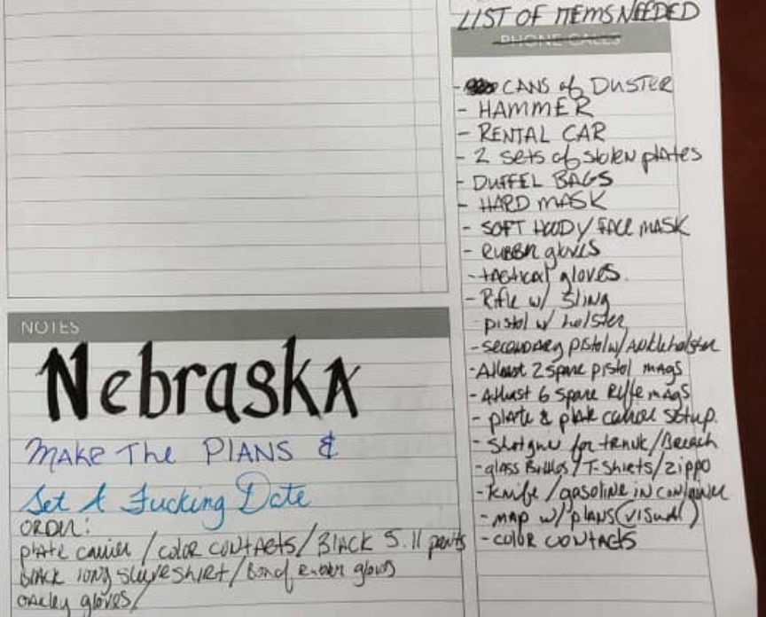
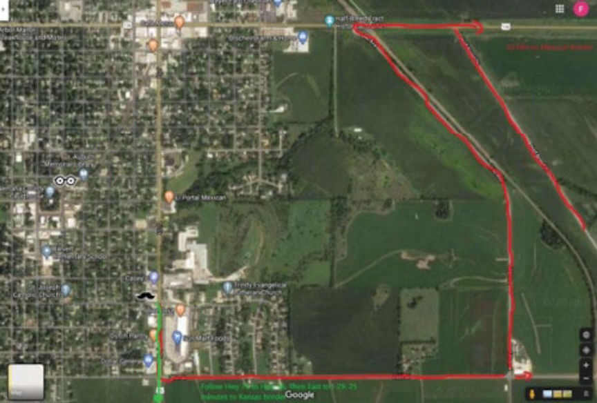
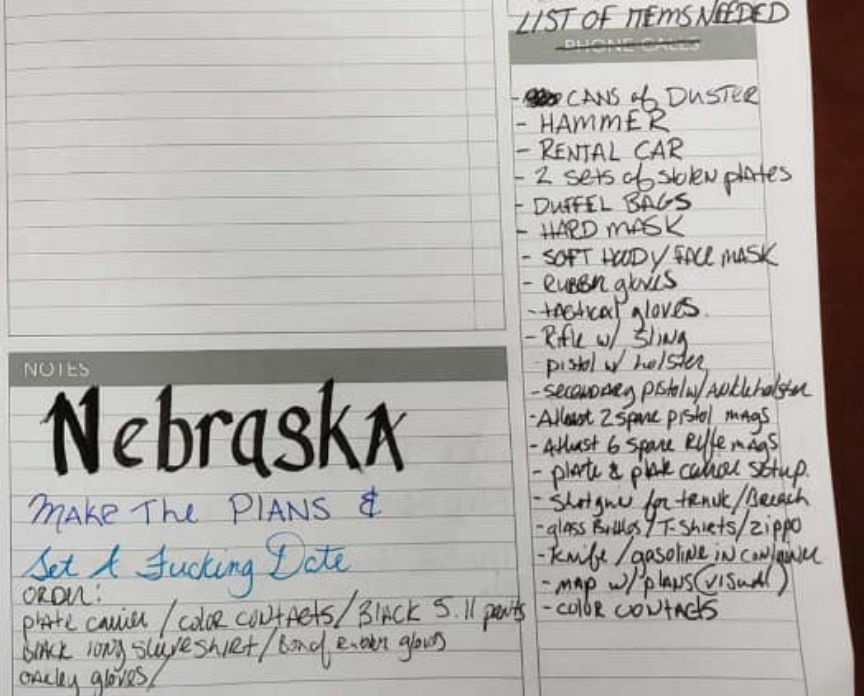
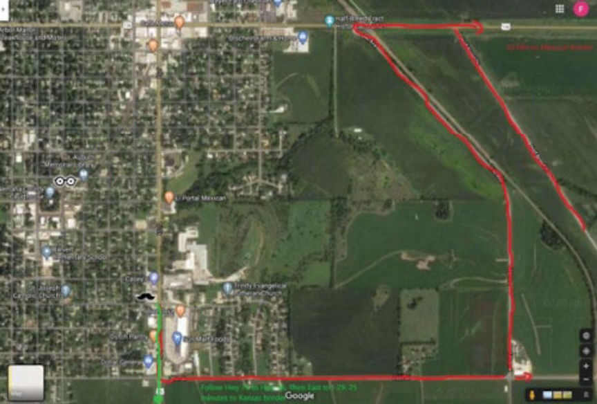

Pharmacist Arrested for Firebomb Plot and Drug Distribution
~3 min read | Published on 2020-04-20, tagged Darkweb-Vendor, Drug-Bust, Drugs, General-News using 651 words.
A Nebraska pharmacist accused of supplying prescription pills to Empire market vendor "NeverPressedRX" was arrested for conspiring to firebomb a competitor’s pharmacy. The pharmacist also mailed thousands of pills to NeverPressedRX, according to court documents.
According to court documents, Hyrum T. Wilson, 41, the owner of Hyrum’s Family Value Pharmacy, conspired to firebomb another pharmacy in Nebraska. William’s co-conspirator, Anderson Burgamy IV, 32, operated the NeverPressedRX vendor account on Empire Market. Wilson and Burgamy believed eliminating Wilson’s competition would increase business at Hyrum’s Family Value Pharmacy.
The firebombing plot was called “Operation Firewood” and was discovered after Burgamy’s arrest on April 9, 2020.Burgamy’s Arrest
The federal investigation into NeverPressedRX began in December 2019. Between January and April 2020, federal agents made a number of undercover purchases from NeverPressedRX. The undercover purchases eventually led to Burgamy’s arrest for allegedly operating the vendor account in question.
On April 9, the investigators arrested Burgamy and searched his Maryland residence. The search led to the seizure of eight loaded firearms, thousands of prescription pills and other items associated with the NeverPressedRX darkweb vendor accounts.
Burgamy reportedly waived his Miranda rights and agreed to talk to investigators. He told the investigators that he had only one supplier: Wilson. He then told the investigators that Wilson worked as a pharmacist in Auburn and that he operated “Hyrum’s Family Value Pharmacy.”
The investigators subsequently executed search warrants at Wilson’s residence and at his Pharmacy.The Firebombing Plot
While reviewing evidence seized from Burgamy’s residence, one of the investigators found a notebook labeled “NPRX Private.” In one of the entries made on January 10, 2020, the investigator found the following handwritten text: “Hyrum responded w/ no more orders until Operation Complete. FUCK!!! Make plans (extremely thorough to fulfill the fucking plan)”
In another page in a section labeled “List of Items Needed,” Burgamy listed the items needed to execute the firebombing plot. The list included a rental car, two sets of stolen plans, face mask, gloves, duffel bags, a rifle, a pistol, a map, and a container of gasoline.

The investigators also recovered text messages between Burgamy and Wilson. The messages were discovered after investigators seized Burgamy’s phone. The duo discussed their drug trafficking operation as well as the firebombing.
“I may need you to give me the run down of where you think the shit would be. What I have planned is to spray paint outside, then immediately break door. Head in with a duffle bag and have the guy in bring [sic] with a case of beer bottles converted in maltoff [sic] cocktails and a zippo lighter and as soon as I hop the counter with the bag he’ll throw the 4 cocktails. What do you think.”
Wilson, in the text messages, provided the location of the target pharmacy and detailed the getaway plan. Burgamy and one accomplice would execute the firebombing plan, according to duo’s written plans. Burgamy and his accomplice would carry numerous firearms and wear masks during the attack. After gaining entry into the pharmacy, Burgamy would steal hydrocodone and oxycodone pills before setting the pharmacy on fire and escaping in a rental car.

To prove that he was ready to execute the plan, Burgamy sent Wilson an image of two masks and an image of a car trunk full of guns. Wilson then sent Burgamy the getaway map and instructed Burgamy to drive to the Kansas and Missouri Border after firebombing the victim’s pharmacy.Wilson’s Arrest
Law enforcement arrested Wison on April 17, 2020. Wilson was charged with conspiracy to use fire and explosives, conspiracy to distribute controlled substances, and a firearms-related offense. He faces a maximum penalty of life in prison if found guilty.
On April 13, Burgamy was remanded into custody after his detention hearing that took place via video conference in the U.S. District Court for the Eastern District of Virginia.
According to court documents, Hyrum T. Wilson, 41, the owner of Hyrum’s Family Value Pharmacy, conspired to firebomb another pharmacy in Nebraska. William’s co-conspirator, Anderson Burgamy IV, 32, operated the NeverPressedRX vendor account on Empire Market. Wilson and Burgamy believed eliminating Wilson’s competition would increase business at Hyrum’s Family Value Pharmacy.
The firebombing plot was called “Operation Firewood” and was discovered after Burgamy’s arrest on April 9, 2020.Burgamy’s Arrest
The federal investigation into NeverPressedRX began in December 2019. Between January and April 2020, federal agents made a number of undercover purchases from NeverPressedRX. The undercover purchases eventually led to Burgamy’s arrest for allegedly operating the vendor account in question.
Hyrum T. Wilson | Omaha World-Herald
On April 9, the investigators arrested Burgamy and searched his Maryland residence. The search led to the seizure of eight loaded firearms, thousands of prescription pills and other items associated with the NeverPressedRX darkweb vendor accounts.
Burgamy reportedly waived his Miranda rights and agreed to talk to investigators. He told the investigators that he had only one supplier: Wilson. He then told the investigators that Wilson worked as a pharmacist in Auburn and that he operated “Hyrum’s Family Value Pharmacy.”
The investigators subsequently executed search warrants at Wilson’s residence and at his Pharmacy.The Firebombing Plot
While reviewing evidence seized from Burgamy’s residence, one of the investigators found a notebook labeled “NPRX Private.” In one of the entries made on January 10, 2020, the investigator found the following handwritten text: “Hyrum responded w/ no more orders until Operation Complete. FUCK!!! Make plans (extremely thorough to fulfill the fucking plan)”
In another page in a section labeled “List of Items Needed,” Burgamy listed the items needed to execute the firebombing plot. The list included a rental car, two sets of stolen plans, face mask, gloves, duffel bags, a rifle, a pistol, a map, and a container of gasoline.

A list found during the execution of a search warrant
The investigators also recovered text messages between Burgamy and Wilson. The messages were discovered after investigators seized Burgamy’s phone. The duo discussed their drug trafficking operation as well as the firebombing.
“I may need you to give me the run down of where you think the shit would be. What I have planned is to spray paint outside, then immediately break door. Head in with a duffle bag and have the guy in bring [sic] with a case of beer bottles converted in maltoff [sic] cocktails and a zippo lighter and as soon as I hop the counter with the bag he’ll throw the 4 cocktails. What do you think.”
Wilson, in the text messages, provided the location of the target pharmacy and detailed the getaway plan. Burgamy and one accomplice would execute the firebombing plan, according to duo’s written plans. Burgamy and his accomplice would carry numerous firearms and wear masks during the attack. After gaining entry into the pharmacy, Burgamy would steal hydrocodone and oxycodone pills before setting the pharmacy on fire and escaping in a rental car.

A screenshot of the map Wilson sent to Burgamy
To prove that he was ready to execute the plan, Burgamy sent Wilson an image of two masks and an image of a car trunk full of guns. Wilson then sent Burgamy the getaway map and instructed Burgamy to drive to the Kansas and Missouri Border after firebombing the victim’s pharmacy.Wilson’s Arrest
Law enforcement arrested Wison on April 17, 2020. Wilson was charged with conspiracy to use fire and explosives, conspiracy to distribute controlled substances, and a firearms-related offense. He faces a maximum penalty of life in prison if found guilty.
On April 13, Burgamy was remanded into custody after his detention hearing that took place via video conference in the U.S. District Court for the Eastern District of Virginia.